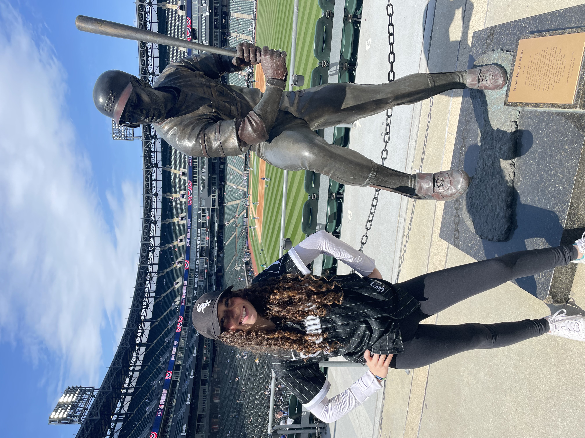
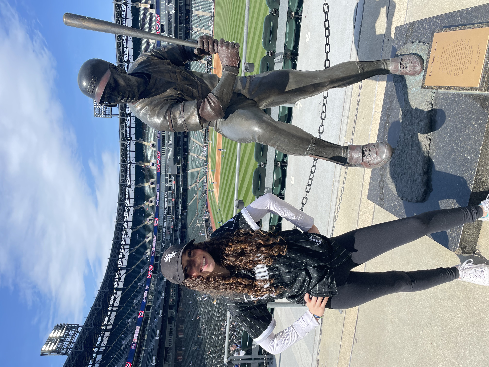

Although the white sox did not make many officient offseason moves like teams like the Astros and Dodgers did, they made one particular move that will amplify their performance in the coming season. The White Sox acquired Andrew Benitendi from the New York Yankees toward the vital points of hot stove.